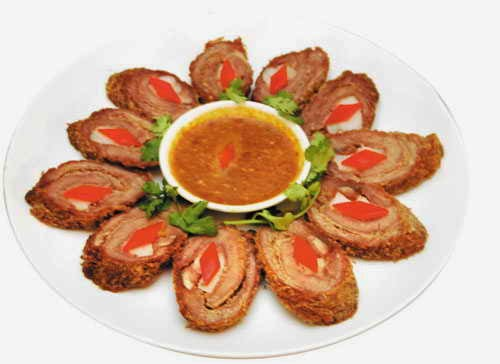

Bò thưng

- Khẩu phần 4
- Chuẩn bị 15 phút
- Thực hiện 25 phút
Nguyên liệu
- 500g thịt thăn bò
- 200g mỡ gáy
- 200g đậu phộng rang
- 1 thìa súp nước mắm
- 1 thìa súp hạt nêm
- 1 thìa súp đường
- 2 trái dừa xiêm
- 1 thìa súp hành tím và tỏi băm
- 4 thìa súp dầu ăn
- Dây chỉ cột thịt
Hướng dẫn thực hiện
- Đậu phộng rang đập giập, chia làm 2, một phần để cho vào nồi thưng, một
phần để rắc lên đĩa trước khi ăn
- Thịt bò cắt miếng dày, đập giập thật mềm
- Mỡ gáy cắt sợi dài bằng miếng bò, cho đường vào ướp cứng trong
- Cho mỡ gáy vào thịt bò cuộn tròn lại, dùng dây quấn chặt lại
- Phi thơm tỏi và hành tím, cho bò cuộn vào chiên vừa chín. Cho nước dừa
vào nấu sôi, nêm nước mắm, hạt nêm, đường và đậu phộng đập giập vào thưng
đến khi cuốn bò mềm là được
- Để thịt nguội, thái miếng mỏng, rắc đậu phộng, chan nước xốt lên trên
dùng kèm với khế, chuối chát và bánh mì rất ngon.